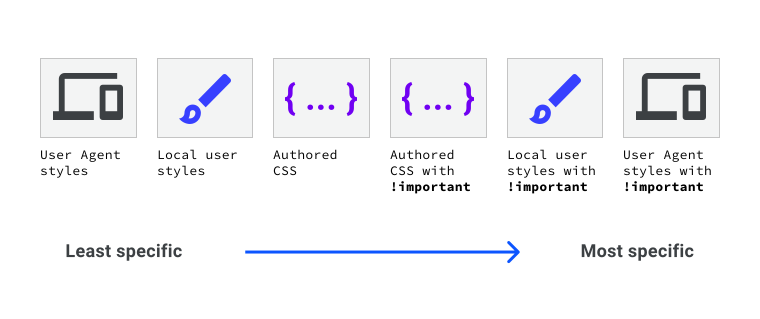

The Cascade
The cascade is an algorithm used to decide which CSS rule to apply if multiple CSS rules apply to an HTML element.
It is split into 4 distinct stages:
- Position and order of appearance: order of which CSS rules appear.
- Specificity: an algorithm which determines which CSS selector has the strongest match.
- Origin: the order of when CSS appears and where it comes from, whether that is a browser style, CSS from a browser extension, or your authored CSS.
- Importance: some CSS rules are weighted more heavily than others, especilly with the
!important rule type.
Position and order of appearance
- two rules with selecrors of identical specificity = selects the last one to be declared
- if you have two
<link> tags that include CSS = the bottom one will have most specificity (same with <style> tags)
- if a
<style> is first declared, then a <link> = the <link> will have most specificity (e.g. <style> delcared in the <head> and <link> in the <body>)
- the inline style attribute will override all other CSS, regardless of its position, unless a declaration
!important is defined.
- if two declarations within the same declaration block specify the same property = the last one will be selected and the previous ones ignored by the browser
- // specifying two values for the same property helps create fallbacks for browsers that don't support a particular value, if a browser doesn't support a value then it will discard that declaration, and so another one can be used, e.g. using
clamp() to clamp the size of an element, like its font-size or width
Specificity
Order of specificity from most specificity to least:
- element with id > element with a class > element >
Most specificity CSS rules will override all the other ones.
The more specific a selector is the more specificity therefore harder to override, e.g. a.my-class.another-class[href]:hover, it is recommended you keep selectors as simple as possible.
Origin
The order of specificity of these origins, from least specific to most:
- User agent base styles: browser internal default stylesheet.
- Local user styles: these can come from the operating system level, e.g. base font. They can also come from browser extensions, e.g. allow users to write their own custom CSS.
- Authored CSS: CSS that you write.
- Authored
!important: any !important that you write.
- Local user styles
!important: any !important that come from the operating system level, or browser extension level CSS.
- User agent
!important: any !important that are defined in the default CSS, provided by the browser.

Importance
Order of importance, from least important to most:
- normal rule type, such as
font size, background or color
animation rule type!important rule type (folling the same order as origin)transition rule type